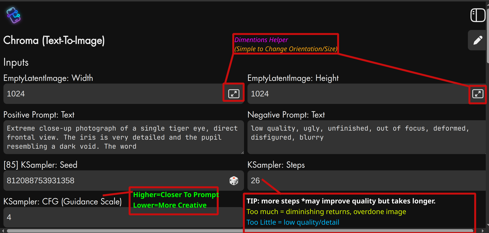
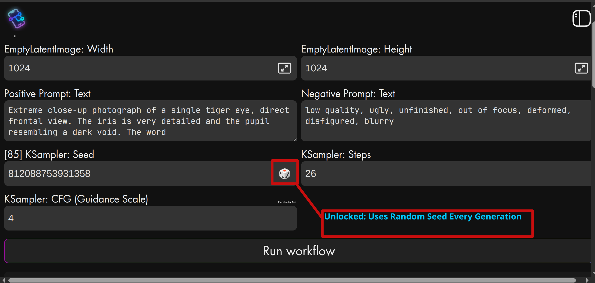
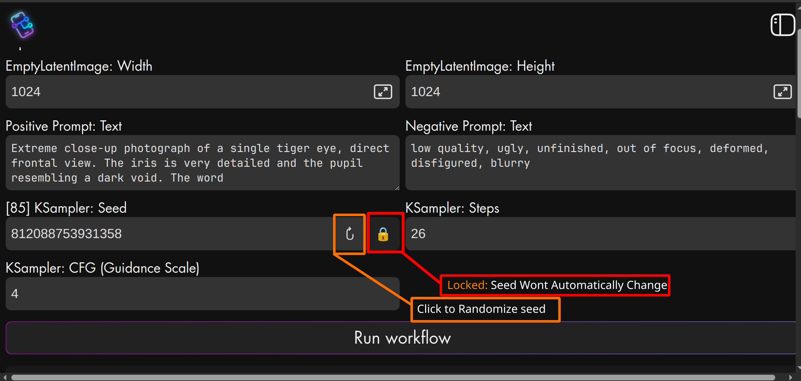

Your First Conversation with an AI Artist
Think of an AI model like Chroma as a brilliant, literal-minded artist. It can draw anything, but only if you describe it perfectly. The "prompt" is your description. This guide will teach you how to talk to the artist using two tools: the Positive Prompt (what to draw) and the Negative Prompt (what to avoid).
Section 1: The Universal Basics
The Building Blocks of a Great Prompt
A good prompt isn't just a list of words; it's a structured recipe. For most AI models, focusing on three key areas in order yields the best results. The Subject is by far the most important ingredient.
Principle 1: Be Specific!
Vague prompts create generic images. The AI can't read your mind. Instead of "a car," describe "a vintage red convertible driving on a coastal road at sunset."
Principle 2: Iterate
Don't try for perfection at first. Start with a simple idea like: "a fox," see the result, then add details one by one, like "a fox in a snowy forest, watercolor style."
💡 Usage Note: Reuse Seed
Ensure that you are using the same seed value for each iteration to maintain consistency in your results.
Section 2: FLUX vs. Chroma - Understanding the Engine
Model Personalities
Chroma is based on FLUX.1, but was modified to give you more control. FLUX is a great listener that understands sentences perfectly but is hard to steer. Chroma combines that listening skill with powerful, direct controls, especially via the negative prompt.
The Main Difference: Your Control
-
➤
FLUX.1: It demands full, perfect sentences. Correcting it means rewriting the whole description. It's like commissioning a painting and waiting for the final result.
-
➤
Chroma: It gives you back the steering wheel. The negative prompt is a powerful tool to actively shape the image. It's more like sculpting clay, adding and removing until it's just right.
Because of this, with Chroma, you are in the driver's seat, able to make fine-tuned adjustments iteratively.
Section 3: Mastering Chroma
Your Primary Steering Wheel: The Negative Prompt
While a good positive prompt is crucial, Chroma's power lies in its responsive negative prompt. Use it not just to fix errors, but to actively define your desired style. A small, targeted negative prompt is often more effective than a long list.
Chroma Core Principle: Order Matters!
Place the most important part of your image at the very start of the prompt. This has a huge impact.
Example: Start with "A portrait of a queen..." not "In a castle, there is a portrait of a queen...".
The Chroma Prompting Workflow
Start Simple
Core subject only. Ex: `a cat`
Add Style & Detail
Ex: `A photo of a fluffy cat, sitting on a bookshelf`
Add Atmosphere
Ex: `...dramatic lighting, magical atmosphere`
Refine with Negatives
Add `cartoon, painting` to make it a photo.
At-a-Glance Cheat Sheet
| Goal | Positive Prompt Tactic (What to Add) | Negative Prompt Tactic (What to Remove) |
|---|---|---|
| Get a realistic photo | Start with `photograph of...`. Add `8k, ultra-detailed`. | Add `painting, drawing, illustration, cartoon, 3d`. |
| Get a cartoon/anime image | Start with `anime screenshot...`. Name an artist style. | Add `photograph, realistic, 3d, photorealism`. |
| Fix ugly or blurry images | Add `masterpiece, best quality, sharp focus`. | Add `low quality, ugly, deformed, blurry`. |
| Emphasize a key detail | Put the subject at the very beginning of the prompt. | (Not applicable for this goal) |
Guide for ComfyUI Mini
A quick look at the interface controls.
UI Overview
Seed Field Overview
The seed field is important because it determines the randomness of the generated image. Using the same seed while changing the prompt allows you to see how the image changes with different prompts.
Unlocked Mode (The Default)
Locked Mode
⚠️ WARNING: Seed Persistence
If you want to reuse a Seed number, save it elsewhere. There is no guarantee the web-app will remember it when you leave the session.
💡 Usage Note: Manual Entry
You can manually enter any Seed value you want directly into the Seed field text box.